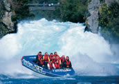

Taupo
Offering clear blue lakes, geothermal activity, lush green farmland, beautiful walks and roaring water falls, this region has something for everyone.
Taupo (population 22,000) is situated on the north-eastern shore of New Zealand's biggest Lake, Lake Taupo. Lake Taupo is internationally recognised for its great fishing (Rainbow Trout). Wairakei (10 km north) is an active geothermal area. The energy is harnessed and used to generate electricity at the Wairakei Geothermal Power Station. The nearby Wairakei Park is well worth a visit. See bubbling mud pools at the 'Craters of the Moon thermal area' and also the mighty Huka Falls.
See also our Ruapehu Tourism Guide.